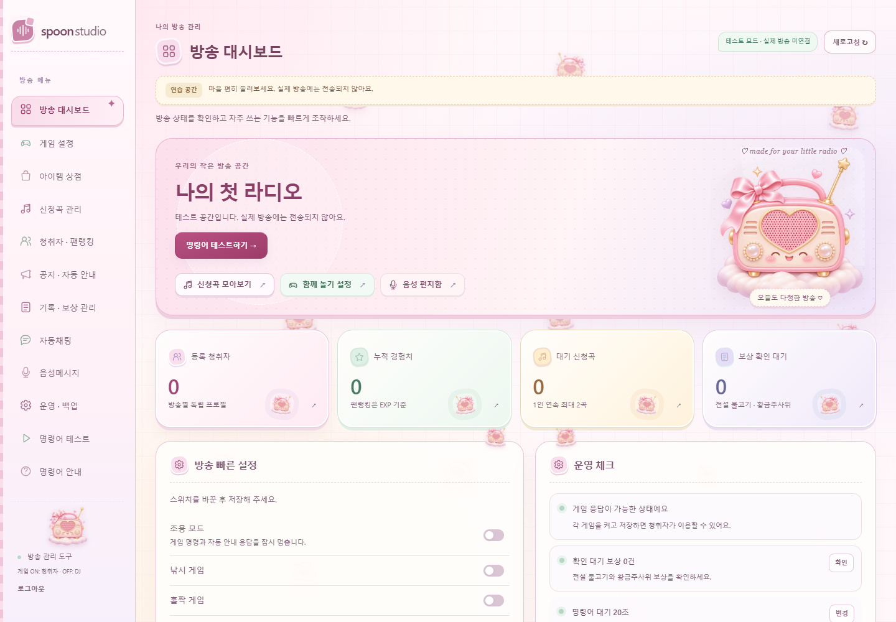

Spoon Studio · Radio Mate
스푼 방송의 신청곡·게임·음성 접수를 관리하는 도구
저장소 이력 기준 2026.11.16–11.17 · 최신 갱신 2026.11.17
AI 보조 구현·검증 자료 | 개인 기여 범위는 본인 확인 필요
근거: Git log 53639cc~68914d3; README.md; public/bloom.css
사용자 흐름과 구현 범위
DJ: 설정·신청곡·보상·음성 수신함을 한 화면에서 관리
청취자: 출석·게임·신청곡으로 참여하고 음성 메시지를 접수
문제: 중복 지급과 전송 실패를 같은 문제로 다루면 잔액이 틀어질 수 있음
판단: 보상 정산과 메시지 전달을 분리하되 DB에는 함께 기록
근거: core.mjs:Engine.handle; server.mjs; voice.mjs
새 디자인 · 실제 실행 화면

딸기우유·라벤더·크림·민트 컬러
라디오 미니미, 리본, 체크·레이스 배경
390·1024·1440px 화면 확인 · 가로 넘침 0
근거: tools/check-bloom.cjs; output/bloom-ui-checks.json; docs/assets/
구성 · 연결 · 저장
브라우저 관리 화면 → Node.js HTTP API → SQLite
스푼 OAuth 동의 → 암호화 토큰 → SSE 이벤트 수신
방송 ID별 설정·청취자·이벤트·음성을 분리
한국·일본 지역에 맞춰 로그인 주소와 API 서버를 함께 선택
근거: server.mjs; spoon.mjs:spoonRegion; core.mjs:Store
핵심 설계 01 · 중복·경합 보호
이벤트 ID를 확인하고 SQLite 트랜잭션 안에서 명령을 처리
보상·잔액·도감·기록과 결과 메시지를 함께 커밋
오버플로와 규칙 위반은 SAVEPOINT로 되돌림
복권 변경 버전으로 비동기 추첨 중 초기화·재지급 경합 차단
근거: core.mjs:Engine.handle/handleAsync; test/review-regressions.test.mjs; test/lottery-batch.test.mjs
핵심 설계 02 · 영속 전송 대기열
결과만 대기열에 보관하고 보상 명령 자체는 재실행하지 않음
429 전송 제한은 최대 5회 재시도 · 10분 지난 메시지는 만료
통신 오류·5xx·전송 중 재시작은 전송 확인 필요로 분리
운영자가 중복 가능성을 확인한 뒤 수동 재전송 또는 취소
근거: outbox.mjs; spoon.mjs:sendDetailed; public/operations-ui.mjs; test/operations.test.mjs
핵심 설계 03 · 암호화 전체 백업
6시간마다 전체 백업 · 최근 7개 날짜 사본 보관
DB 스냅샷과 등록된 음성을 AES-256-GCM으로 암호화
키·DB 무결성·음성 파일 크기를 검증하고 새 폴더로만 복원
백업 실패 시 이전 사본 보존 · TOKEN_KEY는 별도 보관
근거: backup.mjs; server.mjs:runMaintenance; test/backup-runtime.test.mjs
개인정보 · 보관 · 삭제
내 방송 데이터 내려받기: 프로필·설정·최근 기록·음성
청취자 삭제와 방송 계정 삭제, 스푼 연결·토큰 폐기
음성 보관 기간 설정과 개인정보 안내 페이지 제공
이전 백업의 삭제 유예와 복원 후 삭제 요청 재적용을 안내
근거: privacy.mjs; public/privacy.html; server.mjs:/api/export /api/account-delete
참여 기능 · 시간 · 읽기 흐름
도감·팬랭킹·신청곡·킵: 200자 이내 한 페이지씩 조회
아이템 시간 일시정지: 게임 OFF·조용 모드·방송 미연결 대응
한글·이모지 청크 경계 보존, 큰 요청 413, 잘못된 JSON 400
설정 revision 검사로 다른 탭의 오래된 저장을 거부
근거: pagination.mjs; core.mjs:syncBuffs; http-utils.mjs; test/http-utils.test.mjs
테스트와 실제 실행 결과
101개 자동 테스트 통과: 보상·격리·전송·백업·권한·HTTP
GitHub Actions: Windows/Linux 테스트와 Docker 빌드·운영 모드 기동
실제 Edge: PC·모바일 화면, 설정 저장, 이미지·가로 넘침 확인
공용 임시 HTTPS: /health 응답 및 자동 암호화 백업 생성 확인
근거: deploy/additional-tests.log; tools/check-bloom.cjs; GitHub Actions runs 44025884030; /health
남은 외부 의존성과 제한
Caddy 자동 HTTPS와 Cloudflare 고정 터널 구성을 제공
고정 주소 운영에는 도메인·계정·터널 토큰 설정이 필요
실제 DJ OAuth·토큰 갱신·방송 채팅 송수신·마이크는 미검증
공식 API에 없는 채팅 강퇴·삭제와 월간 DJ 순위는 수동 처리
근거: deploy/README.md; deploy/compose.https.yaml; deploy/compose.tunnel.yaml; https://developers.spooncast.net/docs/en/api-reference/endpoints
기여 범위 · 근거 · 다음 검증
작업 방식: AI 보조 설계·구현·문서화·자동 검증
개인 직접 기여로 제출할 항목은 본인의 코드 검토·수행 기록으로 확정
설명 포인트: 정산 트랜잭션, 불확실한 전달, 안전한 복원
다음 단계: 실제 DJ 동의로 지역별 연동과 실패 복구 검증
근거: Git history; README.md; test/; contribution boundary based on conversation